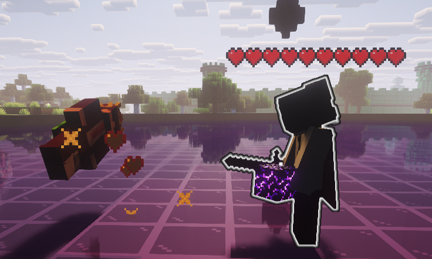
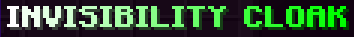

The Deathly Hallows Protocol
Everything the old Horcrux page told you still applies. This adds three legendary items to the server — rarer, stronger, and worth fighting over. Tap a symbol below to jump to it.
The Horcrux System
Your safety net against death. Kill a seasoned player, earn a Horcrux, place it, and dying costs you nothing while it stands.
In-Game Execution
Creation Preview
Earning & Placing Rules
30+ Minutes Playtime Required
Kill a player with 30+ minutes of playtime to receive 1 Horcrux item.
Under 30 Minutes Playtime
Kills on players under 30 minutes yield no Horcrux charge.
3 Charges Max (Global Lock)
Maximum 3 charges per player. Once a player creates a Horcrux, no one else can create one until all existing Horcruxes are destroyed.
Manual vs Auto-Place (30m)
Place anytime. Carrying for 30 minutes automatically drops it at your feet. Only a placed Horcrux counts as active protection!
What Happens When You Die
| CONDITION | RESULT & CONSEQUENCES | PROTECTION STATUS |
|---|---|---|
| 1+ Placed Horcrux | Respawn normally, nothing lost, charge count untouched. A 7-second cosmetic dark/smoke visual effect plays. | SAFE (Protected) |
| 0 Placed Horcruxes | 3-day ban. On return: inventory, armor, ender chest, and XP are completely wiped. | DEADLY (Unprotected) |
The Three Hallows
Three legendary items, each with one job and one weakness. Tap a card to test its ability simulator.
"Unbeaten in a straight fight — as long as you're patient between swings."
The Elder Sword ends a fight the instant it connects — one hit is lethal to any player it strikes, armor included. After a kill, the blade needs 1 minute before it can do that again. Swing it outside a kill and it behaves like a normal weapon.
- Damage: Instant kill on hit (Ignores Armor)
- Cooldown: 1 minute after each one-hit kill
- Best Used: To open a fight, not to spam through a group

Stealth Artifact"Worn, not wielded. Vanish for as long as an hour at a time."
Equip the cloak in your chestplate slot and you go fully invisible — gone from view entirely — for up to one hour per activation. It only equips if you have no other armor piece worn — helmet, leggings, and boots slots must be empty.
- Activation: Chest armor slot (Helmet, Leggings, Boots empty)
- Duration: Up to 1 hour full invisibility per use
- Cooldown: 1 minute rest after taking it off
Armor Slot Eligibility Checker
"A totem you keep — as long as you're holding it when it matters."
Saves you from a killing blow the same way a totem of undying does — but it isn't consumed. It only triggers if it's the item in your hand at the moment of death. On trigger, it broadcasts a server chat message and recharges for 20 seconds.
- Trigger: Must be held in main hand when blow lands
- Uses: Reusable — remains in inventory
- Broadcast: Sends announcement to global server chat
- Cooldown: 20 seconds after each save
Spawn & Compass Tracking
The Hallows don't sit in a shop — they drop into the world at random, and the whole server hunts for them together.
Starting a Run & Reveal Order
An operator runs /dhs. All three Hallows spawn at random locations on the map, and every player immediately receives a tracking compass.
Invisibility Cloak Revealed
Compass points toward the Cloak location first.
Resurrection Stone Revealed
Compass points toward the Resurrection Stone location.
Elder Sword Revealed
Compass reveals the final location of the Elder Sword.
Interactive Compass Radar Simulator
Right-click to scan nearby Hallows artifact signals.
Horcrux Survival & Risk Calculator
Simulate player playtime, carried horcruxes, placed horcruxes, and death outcomes.
Player Parameters
Calculated Status & Risk Assessment
You have 1 placed Horcrux block active in the world. Death will not trigger ban or item wipe.
Server Commands
Quick reference commands for players and server operators.
| COMMAND | PERMISSION | WHAT IT DOES | ACTION |
|---|---|---|---|
/horcrux |
Player | Check your own placed/carried Horcrux counts. | |
/horcrux <player> |
Player | Check another player's Horcrux counts. | |
/dhs |
Operator | Operator command. Spawns the three Hallows and hands every player a tracking compass. |